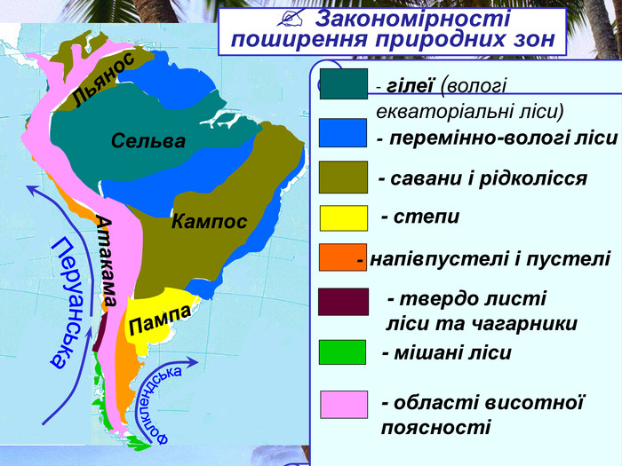

Клімат і значення сельви

Сельва має вологий екваторіальний клімат з середньою температурою +26°C та дощовими сезонами, що тривають майже цілий рік.
Екологічне значення:
- Кисень: Амазонія виробляє близько 20% світового кисню.
- Вуглець: Ліси поглинають близько 2 мільярдів тонн вуглекислого газу щороку.
- Регуляція клімату: Впливає на глобальні погодні умови, зокрема на кількість опадів у багатьох регіонах світу.
Вплив на глобальний клімат:
Амазонський ліс називають "легенями планети", адже він не лише продукує кисень, але й суттєво впливає на глобальні кліматичні процеси.